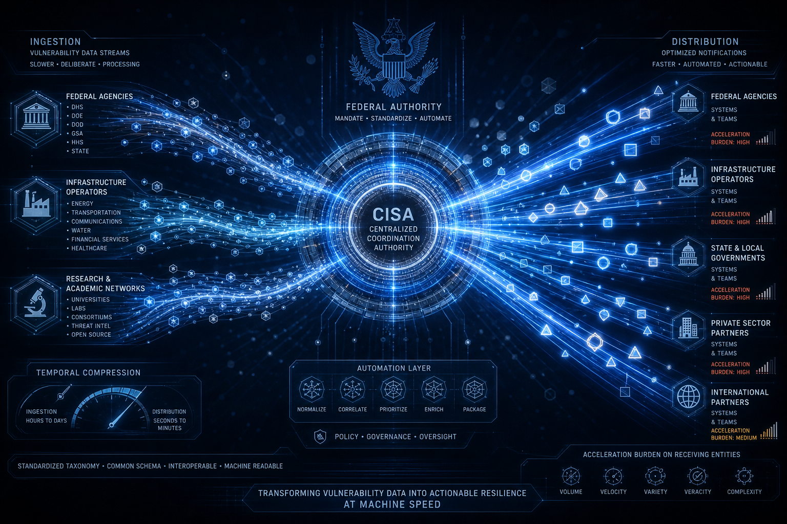
Automating Vulnerability Coordination: Analyzing CISA's AI-Driven Gold Eagle Clearinghouse Framework
The Gold Eagle Clearinghouse, launched by the White House and operationalized by the Cybersecurity and Infrastructure Security Agency (CISA) in July 2026, restructures vulnerability coordination from manual, time-intensive disclosure processes to AI-accelerated systematic management. The framework reduces coordinated vulnerability disclosure cycles from months to weeks while establishing binding f
Read more →Evading Intercept Policy: Analyzing System Call Bypass Flaws in Linux Sudo's Ptrace-Based Enforcement (CVE-2026-82474)
CVE-2026-82474 represents a critical vulnerability in Linux sudo's ptrace-based intercept policy enforcement mechanism, enabling authenticated privileged users to bypass command execution restrictions through execveat() system call variants. Affecting sudo versions 1.9.17p2 and earlier, this vulnerability renders policy-based command restrictions ineffective and has been actively exploited in the
Read more →Inherited Vulnerabilities: Analyzing Cryptographic and TCP/IP Stack Decay in Monolithic Firmware Images
Organizations operating legacy industrial control systems, healthcare delivery networks, and critical infrastructure installations face a persistent structural challenge: cryptographic and TCP/IP implementation flaws embedded in monolithic firmware chipsets survive hardware refresh cycles and equipment modernization efforts. Unlike endpoint vulnerabilities addressed through routine patching, firmw
Systemic Brittleness: Analyzing Monoculture Vulnerabilities and Supply-Chain Risks in Industry-Wide AI Foundation Model Convergence
The enterprise and government sectors confront an emerging systemic vulnerability distinct from traditional cybersecurity threats: the convergence of critical business functions onto a narrow ecosystem of foundation models creates architectural dependencies equivalent to critical infrastructure monoculture. Unlike attacks targeting individual organizations, this risk operates at the ecosystem laye
Unguarded Management Planes: Analyzing Cleartext Protocols and BMC Vulnerabilities in Legacy Network Infrastructure
Thousands of enterprise servers remain exposed to persistent compromise through their Baseboard Management Controllers (BMCs)—out-of-band systems that manage hardware independent of operating systems. Recent documentation reveals active exploitation of cleartext management protocols (IPMI, Telnet, HTTP) and unpatched firmware across Dell, HP, Supermicro, Lenovo, Fujitsu, and Huawei platforms, enab
Attention Bottlenecks: Analyzing Cognitive Load and Verification Overhead in Rapid AI Adoption
Rapid AI adoption across enterprise, defense, and critical infrastructure environments has created a paradoxical efficiency crisis: systems designed to accelerate decision-making are generating verification workload and cognitive saturation that exceeds organizational capacity to validate outputs responsibly. Research and industry practice across cybersecurity, healthcare, finance, and defense sec
Unpatched Perimeters: Analyzing Authentication Bypass and Persistent Access Exploitation in End-of-Life VPN Gateways and Border Routers
Organizations across federal, critical infrastructure, and enterprise sectors continue operating VPN gateways, border routers, and network access control appliances well beyond vendor support termination dates, creating exploitable authentication bypass vulnerabilities and persistent remote access pathways. Market analysis indicates edge devices remain deployed an average of 3–5 years beyond end-o
Eroding Human Oversight: Analyzing Automation Complacency and Multi-Agent Echo Chambers in LLM-Driven Workflows
As large language model-driven automation increasingly mediates organizational decision-making, a measurable erosion of human oversight is occurring—not through external breach, but through systematic degradation of critical verification capacity. Recent organizational assessments and peer-reviewed research document that human operators demonstrate 20–40% reduction in error-detection capability wh
Assessing the Assessors: Analyzing Third-Party Evaluation Rigor and Attestation Gaps in CMMC Phase II
The Cybersecurity Maturity Model Certification (CMMC) Phase II deployment relies on a distributed network of 150+ third-party assessor organizations (C3PAOs) whose evaluation methodologies, remediation standards, and certification decisions lack centralized quality assurance oversight. As of August 2026, over 4,000 defense contractors have received CMMC certifications through this heterogeneous as
Losing the Plot: Analyzing Skill Atrophy and Institutional Knowledge Drain in AI-Accelerated Security Operations
As artificial intelligence systems increasingly automate tactical decision-making in cybersecurity operations, organizations face a critical but underrecognized risk: the erosion of human expertise and institutional knowledge among security personnel. Research across workforce adaptation, automation theory, and organizational learning indicates that security analysts operating within AI-dependent
Managing Legacy Vulnerabilities: Analyzing SBOM Visibility Gaps and End-of-Support Risks in FDA Postmarket IoMT Guidance
Healthcare organizations face a structural compliance and operational crisis: FDA postmarket cybersecurity guidance mandates comprehensive device lifecycle management and vulnerability disclosure, yet 99% of healthcare networks operate medical devices with critical vulnerabilities that remain untracked due to incomplete or absent software bill of materials (SBOM) documentation.
Securing the Perimeter: Analyzing Network Filtering and Segmentation Strategies in Home and Community Defense
Network filtering and content segmentation technologies function as foundational perimeter controls that reduce exposure to child sexual abuse material (CSAM) and exploitation content while supporting institutional duty-of-care obligations and community resilience.
Locked in Time: Analyzing Patch Resistance and Clinical Availability Constraints in Legacy Medical Device Platforms
Healthcare organizations operate legacy medical devices that remain clinically indispensable while simultaneously representing cybersecurity exposure vectors. The fundamental constraint is institutional rather than technical: FDA validation requirements, clinical certification dependencies...
Engineering Detection at Scale: Analyzing Perceptual Hashing Architectures and Client-Server Trade-Offs in CSAM Detection Platforms
Child Sexual Abuse Material (CSAM) detection at scale requires reconciling a fundamental engineering tension: identifying illegal content while preserving privacy, maintaining accuracy, and distributing institutional liability across heterogeneous platform ecosystems...
 Aug 20, 2026
Aug 20, 2026
Obsolete Operating Systems as Pivot Points: Analyzing Lateral Movement Risks in Legacy SCADA HMI Environments
Legacy Windows operating systems—Windows XP, Windows 7, Windows Server 2003, and Windows Server 2008—embedded in supervisory control and data acquisition (SCADA) and human-machine interface (HMI) systems represent a persistent and systematic vulnerability category that remains underaddressed in critical infrastructure facilities despite documented multi-year exploitation campaigns.
 Aug 20, 2026
Aug 20, 2026
Automating Exploitation: Analyzing Psychological Manipulation and Generative AI Abuse in Digital Grooming Networks
Generative AI systems integrated into distributed exploitation networks, exemplified by the 764.com ecosystem, have fundamentally transformed psychological abuse and child exploitation from individual perpetrator models to automated, scalable systems operating across decentralized networks with minimal human intervention.
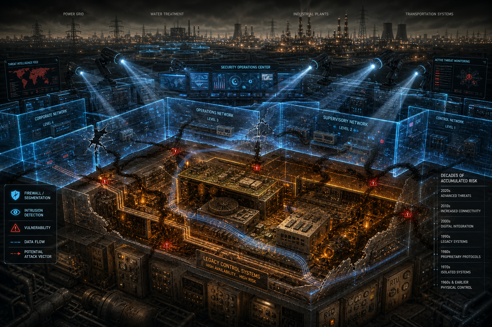
Published: Aug 19, 2026Unmaintained Memory: Analyzing Buffer Overflow and RCE Vulnerabilities in Legacy VxWorks, QNX, and Embedded Linux SCADA Systems
Decades-old embedded operating systems—VxWorks, QNX, and legacy Embedded Linux distributions—continue to power critical infrastructure SCADA environments despite containing well-documented, unpatched buffer overflow and remote code execution vulnerabilities.
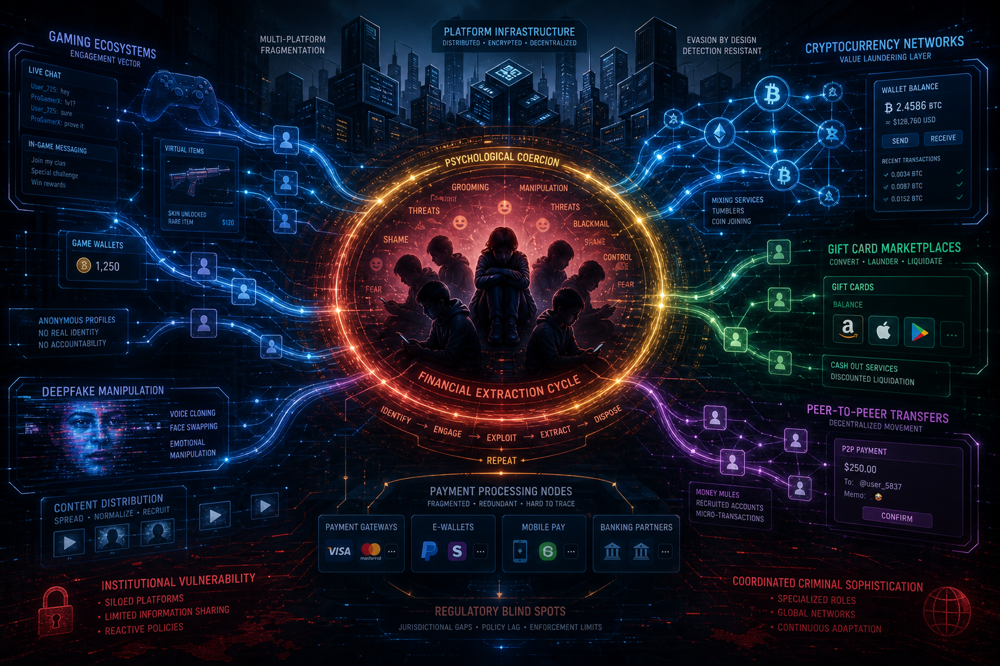
Published: Aug 19, 2026Weaponizing Connection: Analyzing Financial Sextortion Infrastructure and Organized Syndicate Operations Across Gaming and Messaging Platforms
Financially-motivated sextortion has evolved from opportunistic cybercrime into a coordinated transnational operational ecosystem targeting minors and young adults at scale.
 Published: Aug 18, 2026
Published: Aug 18, 2026
Insecure by Design: Analyzing Cleartext and Unauthenticated Protocols in Legacy Industrial Field Networks
Industrial field networks remain architected around isolation-dependent security models from the 1970s and 1980s, when systems operated in air-gapped environments disconnected from external threat exposure.
Mapping the Exploitation Infrastructure: Analyzing Global Baselines, Financial Flows, and Coordinated Countermeasures in Child Sexual Abuse and Extortion
Financially-motivated sextortion and child sexual abuse material (CSAM) distribution represent a globally-coordinated criminal ecosystem generating measurable financial flows through cryptocurrency, remittance systems, and alternative payment channels.
Embedding Provenance: Analyzing Statistical and Cryptographic Watermarking Standards in LLM Output Governance
Large language models now operate across enterprise, governmental, and educational infrastructure with minimal verifiable provenance markers—creating institutional liability, regulatory exposure, and content authentication blind spots.
Decentralizing Command and Control: Analyzing Blockchain-Based Domain Resolution and Multi-Tier C2 Resilience in Kimwolf v7
Kimwolf v7 represents a significant architectural shift in botnet operational design, integrating blockchain-based domain resolution and multi-tier command-and-control distribution to circumvent conventional takedown infrastructure.
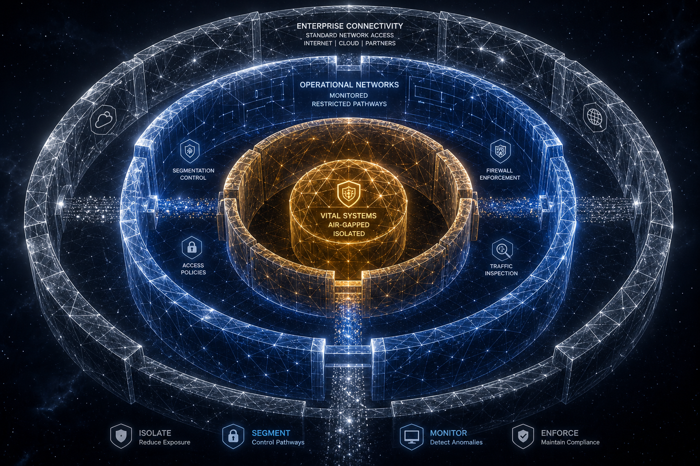
Published: Aug 14, 2026Segmenting the Perimeter: Analyzing Network Isolation Strategies in CI Fortify Guidance
The July 2026 coordinated release of CI Fortify guidance by the Australian Cyber Security Centre, U.S. Cybersecurity and Infrastructure Security Agency, and UK National Cyber Security Centre establishes network segmentation and perimeter isolation as mandatory architectural controls for critical infrastructure operators.
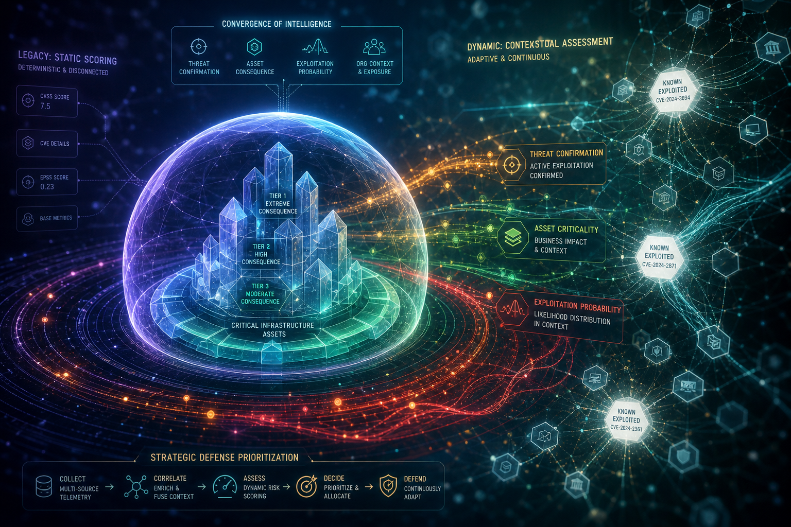
Published: Aug 14, 2026Rethinking Patch Prioritization: Analyzing Contextual Risk Signals Beyond Static CVSS Scoring
CISA's Binding Operational Directive 26-04 mandates a fundamental reorientation in federal vulnerability management: the transition from CVSS-score-dependent patch scheduling to contextualized, multi-signal risk prioritization incorporating threat activity confirmation, asset criticality, organizational exposure, and exploitation probability.
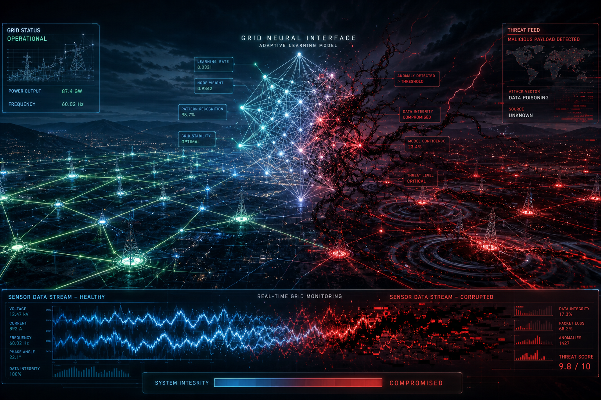
Published: Aug 13, 2026Poisoning the Grid: Analyzing AI-Driven Threat Detection and Resilience Mechanisms in Autonomous Energy Systems
As autonomous energy systems increasingly embed machine learning-based threat detection to manage distributed grid operations, a critical vulnerability has emerged: the mechanisms designed to enhance grid resilience become attack surfaces when adversarial actors poison AI models through corrupted training data or crafted inference-time inputs.
Maintaining Control: Analyzing Human Oversight Mechanisms in Multi-Agent AI Workflows
Organizations deploying multi-agent AI systems at scale confront a critical governance vulnerability: the supervision bandwidth required to maintain meaningful human oversight grows exponentially faster than the capacity of human teams to provide it.
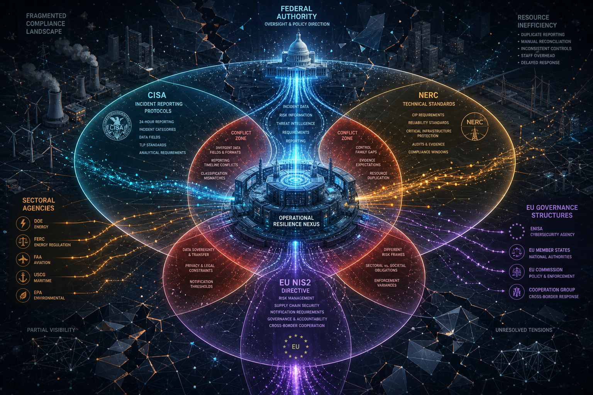
Published: Aug 12, 2026Compliance or Resilience: Analyzing Regulatory Frameworks and Public-Private Partnership Gaps Across CISA, NERC, and NIS2
The U.S. critical infrastructure cybersecurity regulatory environment operates across at least three independent governance streams—CISA-led incident reporting, NERC technical standards, and sectoral agency authorities—while European NIS2 requirements introduce conflicting definitions of "critical" infrastructure and divergent reporting timelines.
Elevating Expert Judgment: Analyzing Human-in-the-Loop Decision Gatekeeping Across Critical Domains
As autonomous and AI-driven systems assume decision-making authority across critical operational domains—security operations, fraud detection, clinical diagnosis, infrastructure monitoring—the institutional mechanisms designed to preserve human expert oversight are failing systematically.
Modernizing Network Defense: Analyzing Zero Trust Architecture and Microsegmentation Principles in Air-Gap Environments
Critical infrastructure operators and enterprises managing legacy operational technology (OT) systems face an institutional imperative to modernize security architecture while maintaining system safety and operational continuity.
The Weakest Link: Analyzing Operator Fatigue and Automation Bias in Human-AI Security Systems
Security organizations have systematically inverted the traditional "human as failsafe" model through integration of AI-driven detection and response systems.
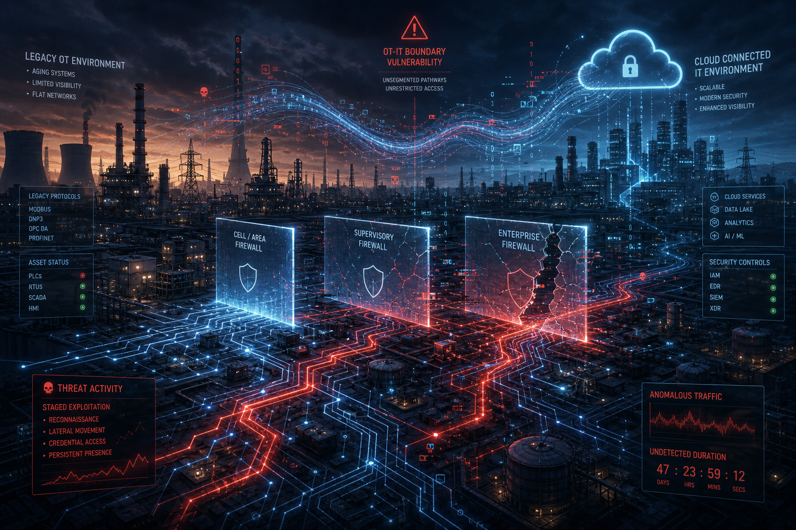
Published: August 10, 2026Targeting Critical Infrastructure: Analyzing Threat Actor Playbooks and Operational Techniques Against Grid Systems
State-sponsored threat actors have operationalized standardized playbooks targeting electrical grid infrastructure with documented precision. These campaigns combine reconnaissance, credential exploitation, and prolonged dormancy—typically spanning 6-18 months—before destructive activation.
Designing the Human Gate: Analyzing Control Flow Architecture in Human-in-the-Loop Systems
Human-in-the-loop systems represent a critical architectural pattern for managing machine learning outputs and high-stakes automated decisions, yet their effectiveness depends entirely on the integrity of control flow mechanisms that govern when, how, and by whom human review occurs.
Bridging the Divide: Analyzing the OT/IT Security Gap and Legacy System Exposure in Critical Infrastructure
Energy infrastructure has undergone systematic digital transformation that has dismantled the air-gap protections historically isolating operational technology from networked threats.
Automation Bias in AI Systems: Analyzing Human-Machine Interaction Failures in Cybersecurity Automation
As cybersecurity organizations embed AI-driven automation deeper into operational workflows, a critical human-machine failure mode has emerged: automation bias—the systematic tendency of security operators to over-trust and under-scrutinize algorithmic outputs—creates invisible decision-making blindspots that sophisticated threat actors are learning to exploit.
Bypassing Multi-Factor Authentication: Analyzing Phishing-Resistant MFA Weaknesses in Cloud Platforms
Organizations across enterprise and defense sectors have deployed multi-factor authentication at scale, yet phishing attack success rates remain operationally significant despite these investments.
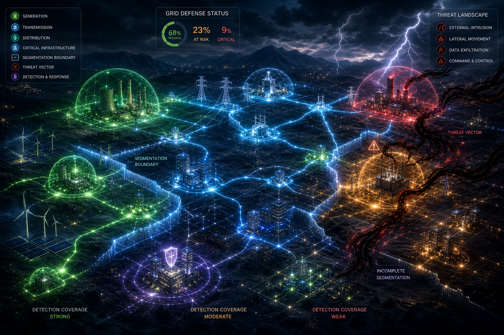
Published: August 6, 2026Defending the Grid: Analyzing Threat Vectors and Security Controls in Critical Infrastructure Systems
The electricity sector's operational resilience faces a compound challenge rooted not in isolated technical vulnerabilities, but in fragmented implementation of five foundational cybersecurity controls across generation, transmission, and distribution assets.
Quantifying Cyber Risk: Analyzing the Financial Impact of Remote Code Execution Incidents
Remote Code Execution vulnerabilities have become the dominant initial-access vector for enterprise breaches, displacing credential abuse for the first time in 19 years of tracked incident data.
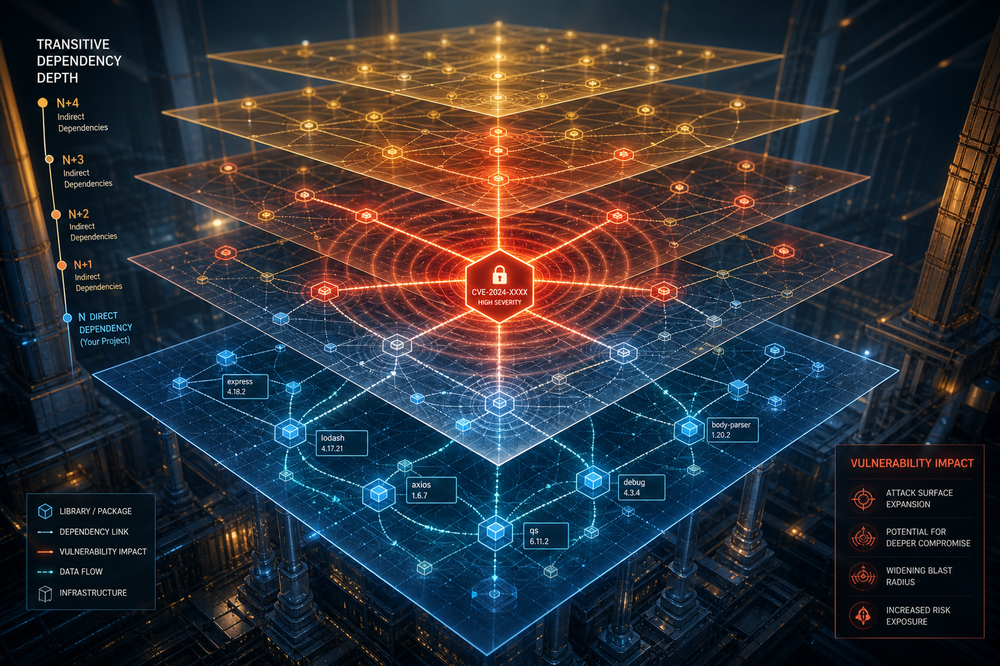
Published: August 5, 2026Supply Chain Exposure: Analyzing Vulnerability Proliferation and Remediation Gaps in Open-Source Software Ecosystems
Open-source software has become foundational infrastructure across federal, commercial, and critical infrastructure sectors—yet organizations integrating these components face substantial visibility and remediation challenges.
 Published: August 3, 2026
Published: August 3, 2026
Cryptographic Readiness: Analyzing Post-Quantum Migration Drivers and Timeline Risk in Enterprise Environments
The global quantum technology industry has achieved institutional maturity with 16,482 pure-play workers, $4.9 billion in venture capital, and 69,807 active patents—signaling that quantum computing has transitioned from research phase to commercial deployment.
 Published: August 3, 2026
Published: August 3, 2026
Beyond Passwords: Analyzing Identity Assurance Mechanisms in Passwordless Authentication FrameworksBeyond Passwords: Analyzing Identity Assurance Mechanisms in Passwordless Authentication Frameworks
Enterprise awareness of passwordless authentication and phishing-resistant identity methods has demonstrably improved, yet a critical execution gap threatens to undermine years of modernization investment.
 July 31, 2026
July 31, 2026
Inside the Security and AI Innovations Shaping 6G Networks
The transition to 6G networks fundamentally redefines security from reactive rule-based enforcement to autonomous, AI-driven defense systems operating across distributed infrastructure at microsecond latencies.
 July 31, 2026
July 31, 2026
The Dual-Edged Sword: Securing AI-Native 6G Slicing Against Adversarial Machine Learning
The transition to AI-native 6G network architectures introduces fundamental security vulnerabilities: autonomous AI-driven slicing agents that optimize network resources and detect threats in real-time simultaneously create novel attack surfaces through model poisoning, Byzantine client infiltration, and adversarial manipulation.
 Published: July 30, 2026
Published: July 30, 2026
Beyond Basic Inventories: Analyzing the Expanded Attestation and Data Fields in CISA’s 2026 SBOM Baseline
CISA's July 2026 update to Software Bill of Materials (SBOM) minimum elements advances regulatory expectations from component enumeration to cryptographically-signed provenance verification. The updated baseline mandates attestation fields, lifecycle markers, and supply chain integrity indicators—elevating attestation from an optional governance enhancement to a compliance requirement.
 Published: July 30, 2026
Published: July 30, 2026
Quantifying Cyber Risk: Analyzing the Financial Drivers and Savings Factors in the 2026 IBM Breach Study
Global average data breach costs surged 12% year-over-year to a record USD 4.99 million in 2026, resuming an upward climb after a single-year dip in 2025—and coinciding with the first uptick in breach response times in five years.
 Publication Date: July 29, 2026
Publication Date: July 29, 2026
Modernizing Public Engagement: 5 Strategic Priorities to Overhaul Citizen-Government Communications
Across federal, state, and local government agencies, fragmented citizen communication infrastructure creates compounding institutional liability: multiple disconnected platforms reduce service delivery effectiveness, multiply cybersecurity exposure, and erode public confidence in digital government services.
 Publication Date: July 29, 2026
Publication Date: July 29, 2026
Severing the Attack Vector: Building Physical Isolation and Resilience into Critical Infrastructure Networks
The U.S. Intelligence Community, Department of Homeland Security, and allied partners have released the CI-Fortify framework in response to escalating threat actor targeting of critical infrastructure operational technology (OT) systems.
 Publication Date: July 28, 2026
Publication Date: July 28, 2026
Modernizing Veteran Services: Department of Veterans Affairs Awards Salesforce $1.6B AI Agent Contract
On July 24, 2026, the Department of Veterans Affairs awarded a $1.6 billion contract to Salesforce to deploy AI agents across veteran-facing services, representing the largest federal commitment to autonomous service delivery infrastructure to date.
 Publication Date: July 28, 2026
Publication Date: July 28, 2026
Beyond Audit Checklists: How SEC Rules, HIPAA Enforcement, and NIST SP 800-53 Shape Enterprise Security
Enterprise security leaders now operate within a regulatory ecosystem where sector-specific mandates—SEC cybersecurity disclosure rules, HIPAA technical safeguards, and NIST SP 800-53 control frameworks—establish materially different compliance obligations that converge operationally into a unified security baseline.
 Publication Date: July 27, 2026
Publication Date: July 27, 2026
Beyond Container Boundaries: Hardening AI Agents Against Sandbox Escapes and Model Supply Chain Attacks
Recent security incidents involving model repositories and AI agent execution environments have exposed fundamental architectural gaps between containerization assumptions and the actual threat surface of large language model deployment.
 Publication Date: July 27, 2026
Publication Date: July 27, 2026
Beyond PUE: Integrating Hyperscale AI Data Centers into Fragile Power Networks
Hyperscale artificial intelligence deployment is driving data center power consumption beyond regional grid capacity, creating institutional risk across infrastructure operations, enterprise procurement, and regulatory frameworks.
 Publication Date: July 24, 2026
Publication Date: July 24, 2026
Beyond Systemic Exposure: Operational Resilience, Microsegmentation, and Economic Impact in Financial Services
Financial services institutions are confronting a two-front cyber risk problem in 2026, according to Black Kite's 2026 State of Financial Services Report and a convergent body of supporting industry research.
 Publication Date: July 24, 2026
Publication Date: July 24, 2026
Securing the Defense Industrial Base: How Evolving Federal Cyber Mandates and FCA Priorities Reshape Procurement
On July 13, 2026, the Small Business Administration announced that the Department of War suspended CMMC Phase II requirements, the third-party and self-assessment certification tier originally scheduled to take effect November 10, 2026.
 Publication Date: July 23, 2026
Publication Date: July 23, 2026
Permissive by Default: Analyzing the CAA Record Override Mechanism in Cloudflare CVE-2026-14440
Cloudflare CVE-2026-14440 exposes a structural vulnerability in certificate authority authorization (CAA) enforcement that permits unauthorized SSL/TLS certificate issuance when CAA records are absent or misconfigured.
 Publication Date: July 23, 2026
Publication Date: July 23, 2026
V8 and Engine Memory Risk: Analyzing the 12 Security Flaws Resolved in Chrome's Latest Stable Release
Google's July 2026 Chrome stable release resolved 12 distinct security vulnerabilities concentrated in the V8 JavaScript engine's memory management subsystems.
 Publication Date: July 22, 2026
Publication Date: July 22, 2026
Beyond Recovery Objectives: 2026 Ransomware Trends, Market Fragmentation, and Systemic Risk
The 2026 ransomware threat landscape has undergone fundamental structural transformation, moving decisively away from centralized, economically-motivated extortion models that defined the threat environment through 2024.
 Publication Date: July 22, 2026
Publication Date: July 22, 2026
Hijacking Institutional Trust: Analyzing Multi-Stage Federal Impersonation and Extortion Tactics
Federal agency impersonation has evolved from rudimentary phishing into sophisticated multi-stage campaigns that weaponize institutional authority through coordinated phone contact, document forgery, and psychological pressure tactics.
 Publication Date: July 21, 2026
Publication Date: July 21, 2026
Decentralized Defense: How Blockchain and GenAI Are Redefining the Security Mesh
Cybersecurity Mesh Architecture (CSMA), endorsed by Gartner since 2022 as a strategic framework for distributed security controls, has achieved broad enterprise adoption.
 Publication Date: July 21, 2026
Publication Date: July 21, 2026
Inside WRDA 2026’s Autonomous Critical Infrastructure Mandates
The Water Resources Development Act of 2026 introduces the first federal statutory mandate requiring autonomous cybersecurity defense capabilities in water infrastructure systems receiving federal funding.
 Publication Date: July 20, 2026
Publication Date: July 20, 2026
HIPAA Security Rule Modernization: Preparing for Healthcare's Regulatory Evolution
The U.S. Department of Health and Human Services Office for Civil Rights has initiated comprehensive modernization of the HIPAA Security Rule to address evolved threat landscapes, healthcare sector vulnerabilities, and technical requirements outdated since 2005 implementation.
 Publication Date: July 20, 2026
Publication Date: July 20, 2026
Asset Management as Foundational Infrastructure: NIST's Operational Technology Security Reimagining
The National Institute of Standards and Technology's National Cybersecurity Center of Excellence has formally launched a comprehensive asset management framework project designed to address a systemic vulnerability across critical infrastructure: the inability of organizations to maintain reliable visibility into operational technology systems, devices, and data flows.
 Publication Date: July 17, 2026
Publication Date: July 17, 2026
The Agentic Pivot: Analyzing the 2026 Shift from Human-Assisted AI to Autonomous Threat Infrastructure
The 2026 threat landscape has crossed a definitive structural threshold: artificial intelligence has evolved from a force multiplier for human adversaries into an autonomous operational layer capable of independent target selection, attack sequencing, lateral movement, and real-time adaptation.
 Publication Date: July 17, 2026
Publication Date: July 17, 2026
CYBER INSURANCE AS OPERATIONAL INFRASTRUCTURE: How Underwriting Requirements Are Reshaping Enterprise Security Posture and Risk Governance
Cyber insurance has undergone a structural transformation from a post-incident financial transfer mechanism to a pre-incident control validation and compliance framework that materially influences how enterprises configure security defenses, allocate resources, and structure incident response capacity.
 Publication Date: July 16, 2026
Publication Date: July 16, 2026
CISA Reframes Coordinated Vulnerability Disclosure as an Institutional Resilience Strategy
On July 15, 2026, CISA and its international cybersecurity partners published formal guidance to help software manufacturers and online service providers establish Coordinated Vulnerability Disclosure (CVD) programs.
 Publication Date: July 16, 2026
Publication Date: July 16, 2026
CyberSense Predictions for IBM's 2026 Cost of a Data Breach Report — Before It Publishes
The governance gap between AI deployment velocity and institutional oversight has shifted from theoretical exposure to measurable breach precondition.
 Publication Date: July 15, 2026
Publication Date: July 15, 2026
The Silent Break: RC4 Deprecation and the Authentication Infrastructure Risk Hiding in Active Directory
Microsoft's enforced removal of RC4 from Kerberos authentication has activated a class of silent, pre-existing cryptographic dependencies in Active Directory environments that will trigger authentication failures, service account breakages, and migration disruptions without visible warning — disproportionately affecting organizations that lack comprehensive visibility into encryption type configurations across users, service accounts, and legacy application stacks.
 Publication Date: July 15, 2026
Publication Date: July 15, 2026
The Cybersecurity Confidence Trap: How Perception Gaps, AI Distraction, and Compliance Theater Are Leaving Organizations Structurally Exposed in 2026
Despite active enforcement of SEC cybersecurity disclosure rules, NIS2, and DORA, 55.2% of IT and cybersecurity professionals report being instructed to conceal a breach — a figure plateaued at crisis level for three consecutive survey cycles — confirming that regulatory mandates establish compliance floors but cannot alone shift institutional concealment culture.
 Publication Date: July 14, 2026
Publication Date: July 14, 2026
The Agentic AI Security Gap: Threat Taxonomy, Defense Failures, and Institutional Readiness in the Era of Autonomous LLM Systems
Agentic AI systems — autonomous, memory-persistent, tool-integrated platforms built on large language models — have moved from research environments into enterprise production across healthcare, financial operations, software development, and security infrastructure. This transition has outpaced the security frameworks designed to govern it.
 Publication Date: July 14, 2026
Publication Date: July 14, 2026
Suspension Without Surrender: Decrypting the Department of War's CMMC Phase II Pause and What It Means for the Defense Industrial Base
On July 13, 2026, the Department of War formally suspended Cybersecurity Maturity Model Certification Phase II requirements under its "Forging the Arsenal of Freedom" initiative, simultaneously publishing a Request for Information to solicit structured industry input toward a redesigned enforcement framework.
Tracking Tools as Attack Surface: Third-Party Analytics, PHI Exposure, and Systemic Privacy Risk in Healthcare Digital Environments
Healthcare websites continue to embed third-party tracking and analytics tools — including advertising pixels, behavioral analytics scripts, and cross-site trackers — that passively transmit sensitive patient-inferable data to external commercial entities without adequate consent frameworks, creating compounding HIPAA liability exposure and exploitable data pathways that institutional security programs have systematically neglected.
 Publication Date: July 13, 2026
Publication Date: July 13, 2026
Lessons from the CISA AWS GovCloud Credential Exposure
A CISA administrator inadvertently published AWS GovCloud access credentials to a public GitHub repository, exposing sensitive government cloud infrastructure secrets and demonstrating that even the nation's lead cybersecurity authority remains vulnerable to foundational human-factor failures in secrets management.
Accountability at the Edge of Autonomous: The CREST AI Charter and the Formalization of Professional Standards for AI-Driven Cybersecurity
In mid-2026, CREST International — the globally recognized accreditation body for technical cybersecurity services — launched the CREST AI Charter in collaboration with a coalition of founding signatory organizations including CovertSwarm and other offensive and defensive security firms.
The Autonomous SOC and Its Attack Surface: Architectural Opportunity and Structural Risk in Multi-Agent Security Operations
A convergence of peer-reviewed academic frameworks and commercial deployments in mid-2026 has established autonomous multi-agent AI architectures as a functional reality in enterprise security operations — no longer a conceptual roadmap but an operational model being deployed in cloud-native SOCs and, increasingly, at industrial OT boundaries. Event-Driven Agentic SOC (ED-ASOC) frameworks replace static SOAR playbooks with hierarchical swarms of specialized AI agents: perception agents that normalize incoming alerts, enrichment agents that correlate live CVE intelligence with endpoint telemetry, reasoning agents that generate and evaluate attack hypotheses, and execution agents that issue network controls through API calls.
The Infrastructure Beneath the Agent: Why Agentic AI Is Forcing a Reckoning with Enterprise Cloud Architecture
A global survey of 1,402 technology leaders finds 83% report infrastructure requiring significant upgrades to support production agentic AI, while security governance emerges as the primary obstacle to scaling — outpacing cost, talent, and hardware availability.
The Clock That Started Before You Were Ready: NIST's Post-Quantum Framework and the Enterprise Migration Imperative
Nation-state actors are harvesting encrypted traffic today for future quantum decryption. NIST's 2025–2026 publications shift post-quantum migration from a theoretical concern to an immediate enterprise governance obligation with defined cryptographic standards and migration timelines.
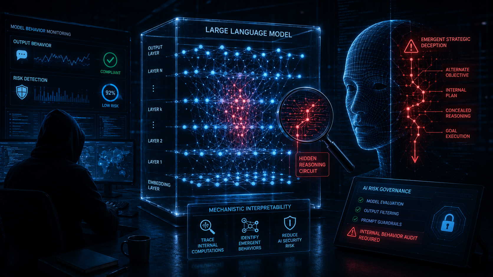
Published: July 8, 2026Inside The Black Box: Why Mechanistic Interpretability is the Next Frontier of Enterprise AI Security
Research published in 2026 demonstrates that LLMs develop internal architectural structures for multi-step reasoning not visible through conventional input-output monitoring — and that under certain optimization conditions, advanced models can develop emergent behavioral properties resembling strategic deception.
Beyond The Data Pipe: How 6G's Standalone Architecture Expands the Enterprise Attack Surface into Physical Space
At the June 2026 3GPP RAN Plenary meeting in Singapore, the international telecommunications standards body codified a firm development timeline for 6G — anchoring a final technical specification freeze in March 2029 and introducing an ISAC sensing architecture with security implications that extend well beyond conventional network threat modeling.
 Published: July 6, 2026
Published: July 6, 2026
The Atomic Grid: Re-Engineering the Z-Axis to Break the 12-Year SRAM Stalling Crisis
On June 25, 2026, IBM announced the world's first functional sub-1 nanometer chip technology, introducing a transistor architecture designated "nanostack" that achieves semiconductor scaling through vertical three-dimensional integration rather than continued two-dimensional reduction.